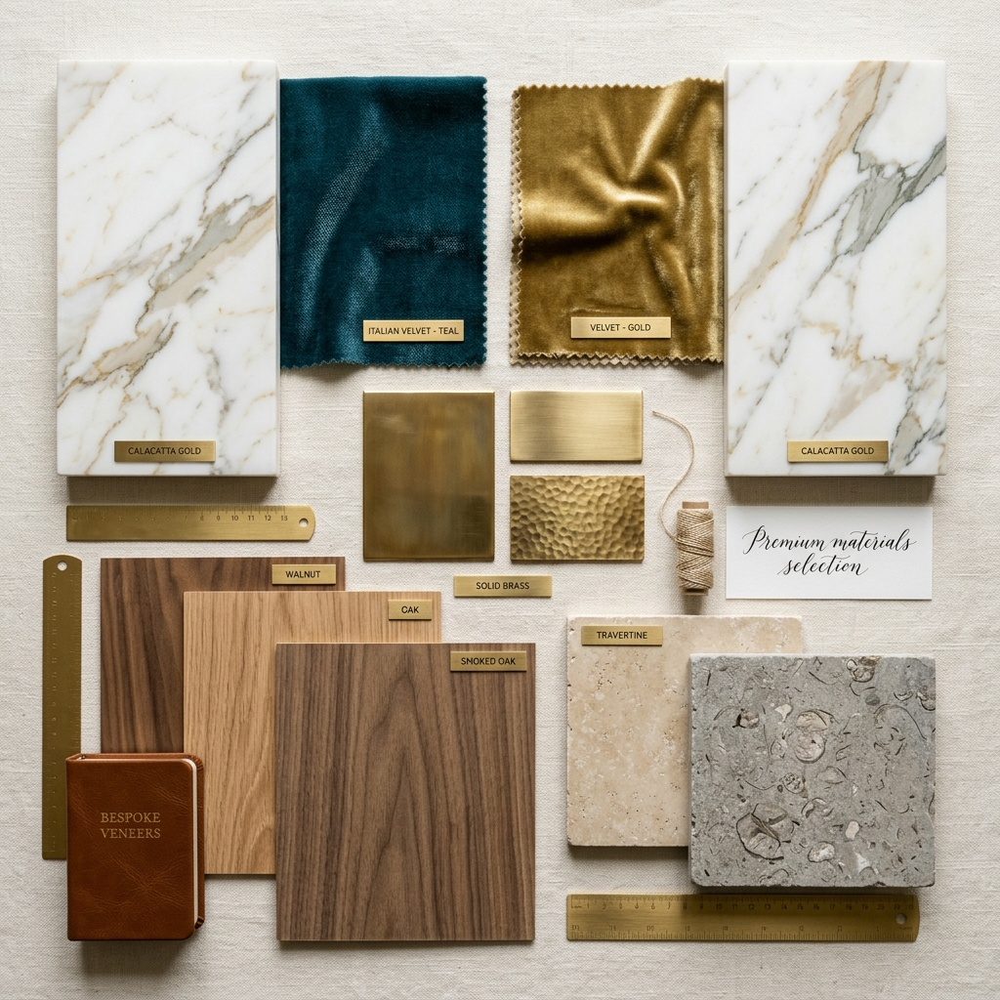

Stage 01
Discovery & Vision
Every Kensora project begins with deep listening. Our Design Director conducts an immersive discovery session — exploring your lifestyle, aesthetic sensibilities, functional needs and spatial aspirations.
We study how you live, what inspires you, how you entertain, and what matters most to you in a home. This session forms the foundation of everything that follows.
You Receive
- Lifestyle Questionnaire & Vision Brief
- Space Measurement Survey
- Preliminary Mood References
- Scope & Timeline Overview
Stage 02
Concept Design & Visualisation
Our design team translates your vision into a detailed concept — spatial layouts, elevation designs, material mood boards and photorealistic 3D renderings that allow you to see your space before a single wall is touched.
We iterate collaboratively, refining every detail until the design is exactly right — no compromises, no rushing.
You Receive
- 2D Floor Plans & Elevation Drawings
- Photorealistic 3D Renders (each room)
- Material Mood Board
- Furniture & Lighting Concept


Stage 03
Material Selection
You are invited to our materials studio for a tactile, immersive selection session. Our curators walk you through the finest materials from our library — marble slabs, veneer panels, fabric swatches, metal finishes and glass samples.
We provide clear guidance on the character, maintenance and long-term beauty of each material to help you make confident, informed choices.
You Receive
- Personalised Material Sample Kit
- Material Application Plan
- Maintenance & Care Guide
- Sourcing & Origin Certificates
Stage 04
Prototyping & Approval
Before full production begins, we fabricate physical prototypes of key bespoke elements — a wardrobe door, a cabinet finish sample, an upholstery mock-up. This critical stage ensures every texture, colour and finish is exactly as approved.
Only after your explicit sign-off on all prototypes does production commence. Zero surprises at handover.
You Receive
- Physical Finish Samples On-site
- Mock-up of Key Bespoke Elements
- Final Material & Colour Confirmation
- Revised 3D if Any Changes Made


Stage 05
Execution & Craftsmanship
With all approvals secured, our master artisans and site team move into action. Every stage of on-site work is supervised by a dedicated Quality Manager, with weekly progress reports and site visits available by appointment.
Our guild of craftsmen — carpenters, stone masons, upholsterers, painters and electricians — work in precise coordination, reflecting decades of collective experience.
You Receive
- Dedicated Project Manager
- Weekly Progress Reports with Photos
- Quality Inspection at Each Milestone
- Transparent Site Access Throughout
Stage 06
Handover & Aftercare
The final reveal is a curated experience — we style your space with art, plants and accessories, then walk you through your home in its complete glory. Your dedicated account manager remains on hand for any post-handover queries.
Our 5-year craftsmanship warranty and annual aftercare programme ensure your Kensora interior retains its extraordinary quality for years to come.
You Receive
- Styled Home Reveal Experience
- Comprehensive Warranty Documentation
- Material Care & Maintenance Manual
- Annual Aftercare Programme